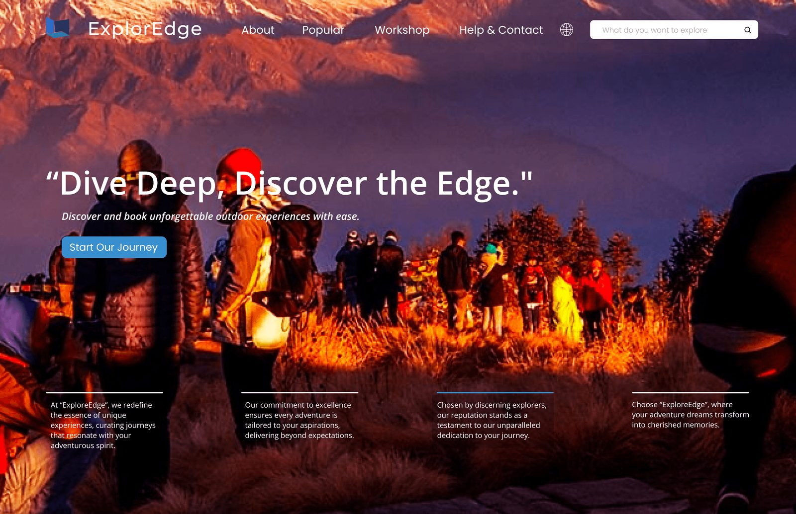
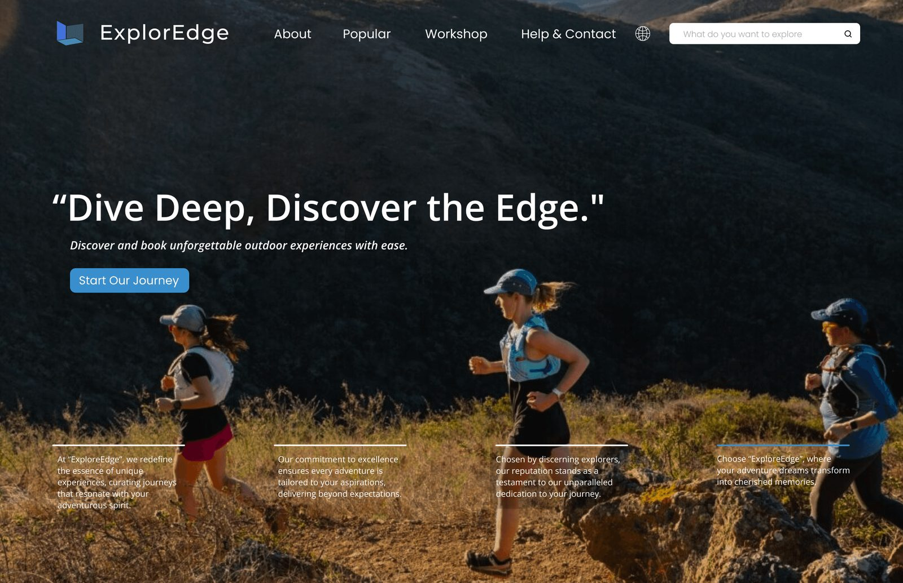
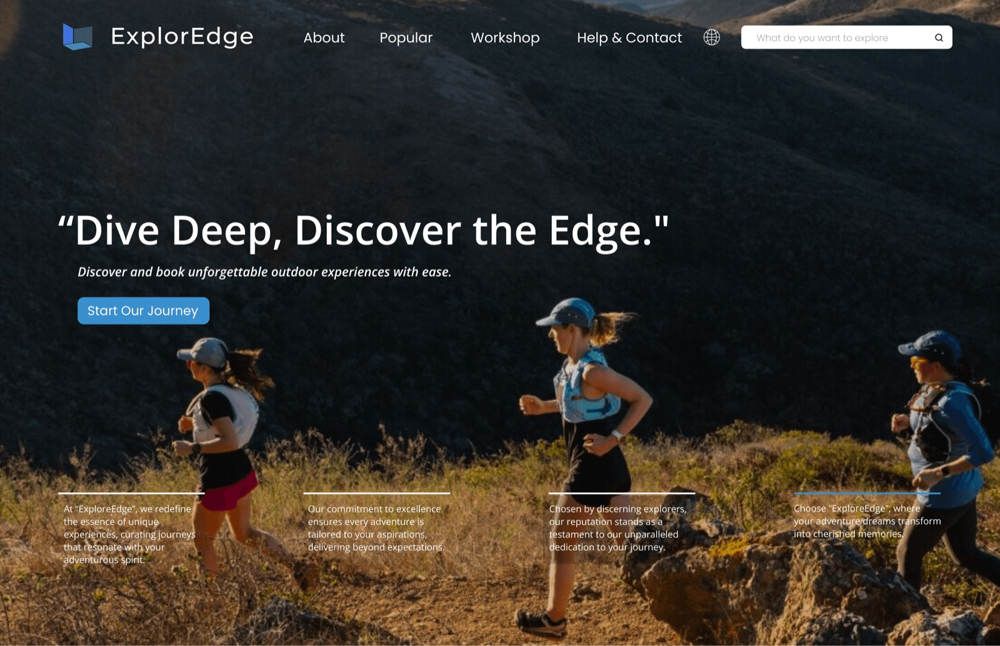

ExplorEdge
Outdoor experiences, one step past your comfort zone. A brand and the site that books it.
- Role · Sole designer
- Year · 2023
- Tools · Figma
Brief
Hiking, climbing, camping, trail running for people between 20 and 35, sold as one step past what you already do.
The ask: a mark, a palette, and the two pages that decide whether anyone books. One line for all of it: Dive Deep, Discover the Edge.
Goals- A mark that reads at 24 px and on a tent flap.
- A landing that sells the feeling before the product.
- A catalogue where a beginner finds their edge, not the expert’s.
Mark
Three planes: a door swung open, the room behind it, the floor between. Hover it and the door opens further.
The edge is not a wall. It is a door left ajar.
- Navythe room
- Bluethe door
- Tealthe ground
- Actionevery button
- Whitetype on photos
Landing
One photograph, one line, one button. The photographs take turns; the line never changes.
As the backdrop turns, a blue hairline walks to the next of four promises.



- Curated
- Tailored
- Trusted
- Remembered
Catalogue
One catalogue, cut three ways, because “my edge” is not one axis.
Level gets the most room. A beginner should not scroll past the experts to find theirs.
- By what
Collections
Hiking · Climbing · Observing
- By how far
Level
Beginner · Intermediate · Advanced
- By how long
Outdoor activities
Half-day · Full-day · Multi-day
Outcome
A brand kit and a clickable landing and catalogue in Figma. Not built.
ReflectionToday I would make the step a control: say how far past “what I already do” you want to go, and the catalogue cuts itself.